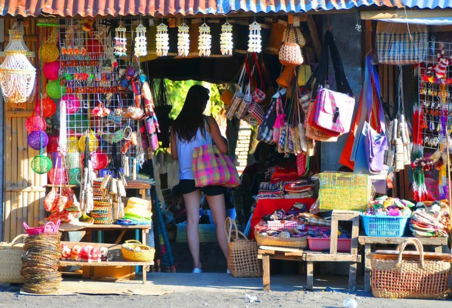

Pasalubong
Gifts that tell a story
In Filipino culture, pasalubong — gifts brought home for family and friends — is an essential travel tradition. Sorsogon offers a wonderful range of local products from natural food delicacies to handcrafted items made from indigenous materials.
Shopping for pasalubong in Sorsogon supports local artisans, farmers, and small enterprises. The Sorsogon City public market, Rizal Street shops, and roadside stalls near tourist sites are the best places to find authentic goods.

What to Buy
Popular souvenirs
Pili Nut Products
Candies, pastillas, tarts, and pralines made from the native pili nut — the most beloved Sorsogon pasalubong by far.
Abaca Handicrafts
Woven bags, baskets, placemats, and runners from abaca fibre — strong, eco-friendly, and uniquely Filipino.
Bagoong na Alamang
Fermented shrimp paste in decorative jars — an essential Bikol condiment and uniquely local culinary souvenir.
Coconut Products
Virgin coconut oil, coco sugar, coconut vinegar, and copra-based snacks — excellent long-lasting food souvenirs.
Dried & Smoked Fish
Tinabal (smoked fish), dried squid, and dried shrimp from Sorsogon Bay fishing communities — flavourful and long-lasting.
Bamboo Crafts
Wind chimes, kitchen utensils, and decorative frames crafted from locally harvested bamboo — sustainable and beautiful.
Bicol Spice Mixes
Ready-made paste and spice mixes for Bicol Express, kinunot, and laing — recreate Sorsogon flavours at home.
Local Art & Prints
Paintings and prints by local artists depicting Bulusan Volcano, whale sharks, festivals, and coastal life.
Where to Shop
Best shopping spots
Sorsogon Public Market
Best for fresh produce, dried fish, pili nut products, and local snacks at the lowest prices — the heart of local commerce.
Rizal Street
Sorsogon City's main commercial street — souvenir shops, bakeries, and specialty food stores side by side.
Donsol Visitors Center
A small souvenir shop selling Butanding-themed merchandise and locally made crafts near the whale shark area.
Irosin & Bulusan Markets
Fresh abaca handicrafts and mountain produce including pili nuts and root crops in local municipal markets.